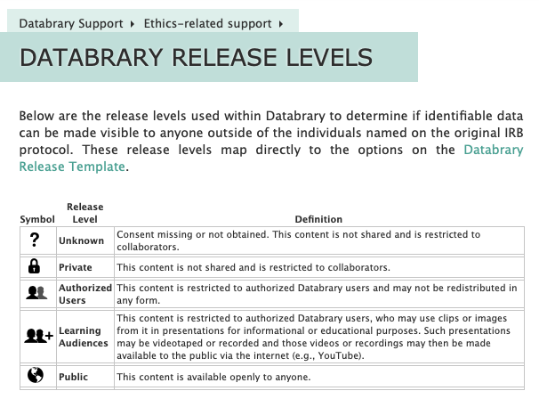
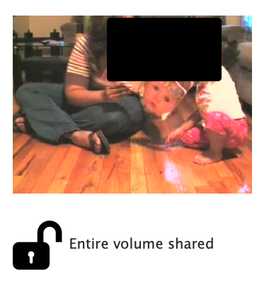
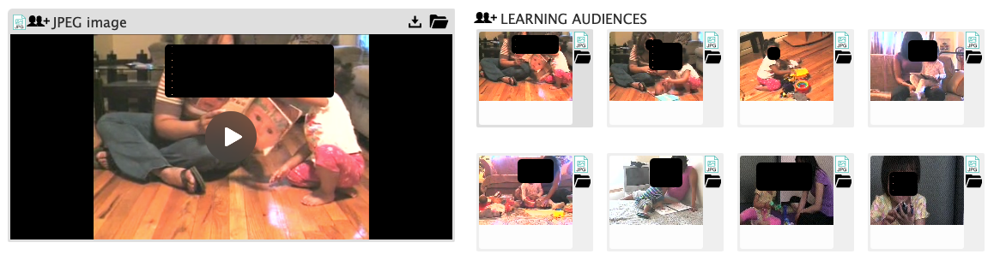
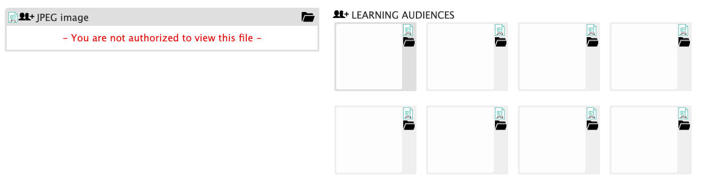
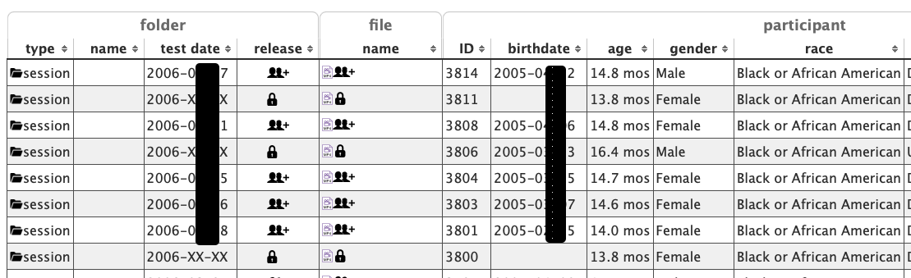
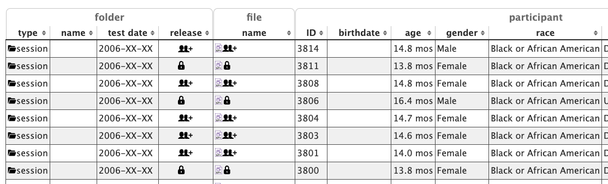

2 Community Recommendations
Overview
The project team had hoped that new funding to update and rewrite the Databrary 1.0 system would emerge during the project period so that specific changes to the system’s user interface could be fully implemented. That did not occur.
However, the team created working testbeds to evaluate a set of ideas that we hope will inform the design and development process of Databrary 2.0 when funds to support that effort have been secured.
This page summarizes some of those recommendations.
Separate views of the same underlying data
A common use case among regular Databrary investigators is the repurposing of old video to answer new questions. This often involves taking a subset of videos collected in different studies and creating a new collection. At present, users who wish to share the new dataset to accompany a publication must re-upload videos to a new Databrary volume. The system checks a hash value for the file, and if it matches one already in storage, Databrary points to the new file rather than store multiple identical copies. But the link or links from a video to multiple Databrary volumes are not exposed to a user. Nor is data about which volume and video is the “parent”–the dataset that was collected first–and which is the “child” represented to users. So, the provenance of the videos is hard to track.
In a future version of Databrary 2.0, we propose that the system natively support multiple “views” of the same underlying data, and expose to users the pedigree of the underlying files. We tested one implementation of this in a custom sandbox system. In that system, users could browse Databrary and “bookmark” datasets or individual data files that they found interesting, then create a new derivative dataset from a collection of their bookmarks. Under the hood, Databrary kept track of the original sources of the selected items and made those available for display to the user.
Extend use of icons to indicate access levels
Databrary currently implements a standard set of access levels that are indicated by a consistent vocabulary and set of icons that are called the Databrary Release Levels.

These release levels fit the needs of researchers who carry out research with human participants where the data are not especially sensitive. Should Databrary expand to meet the needs of other research communities, such as those where invasive video recordings of non-human animal subjects are collected, or videos gathered in clinical contexts, the release and access levels might need to be modified. Even in these cases, we think that there are virtues to adopting standard terminology and graphic icons to indicate the levels of release. Moreover, we think that keeping the number of release levels is wise to reduce the possibility of mislabeling data and to reduce confusion among potential data re-users.
Explain when data is missing
We believe that Databrary 2.0 should consider implementing some additional UI elements that provide clarity to users about what additional data might be available under different data access agreement terms.
For example, if a user has supplied a thumbnail image for a volume, that (possibly identifiable) image is shown to users who are logged in and have full access (left), but not to the general public (right).
Note that we have altered the “full” views below because this site is accessible to the public.


There is no indication that a more informative thumbnail is available, just masked from view. Nor is there an alert to the user that they should log in, if they have an account.
Similarly, if a user has supplied image or video highlights, the possibly identifiable images or videos are shown to authorized and logged-in users, but not to the public.


And in the participant-level spreadsheet data, exact birth and test dates are shown (if participants have given sharing permission) to authorized and logged-in users, but not to the general public.


We recommend that Databrary 2.0 adopt different shading for full vs. restricted views and mouse-over tooltips to indicate where there is more data to be shown than is currently being shown.